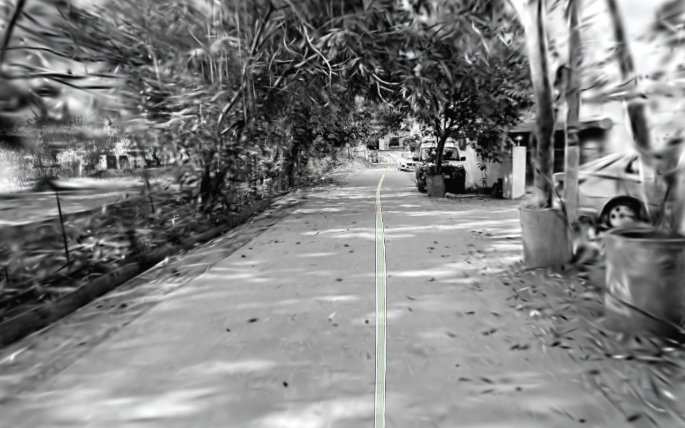
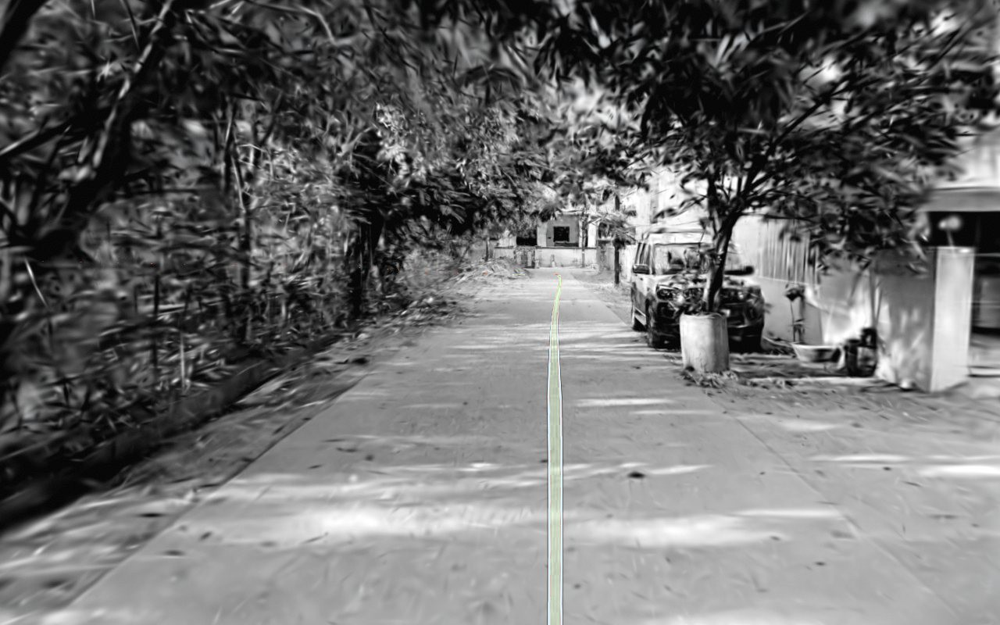

Page not found
This page does not exist.
The link may be old, or the page may have moved.
Or pick a place and walk in
 Park path
Park path
Street
Lane Straight road
Straight road Park walk
Park walk Soybean field
Soybean field Soybean rows
Soybean rows Green rows
Green rows
Soybean field, Soybean rows and Green rows. Source images: The Rosario Dataset, CIFASIS-CONICET, CC BY 4.0.